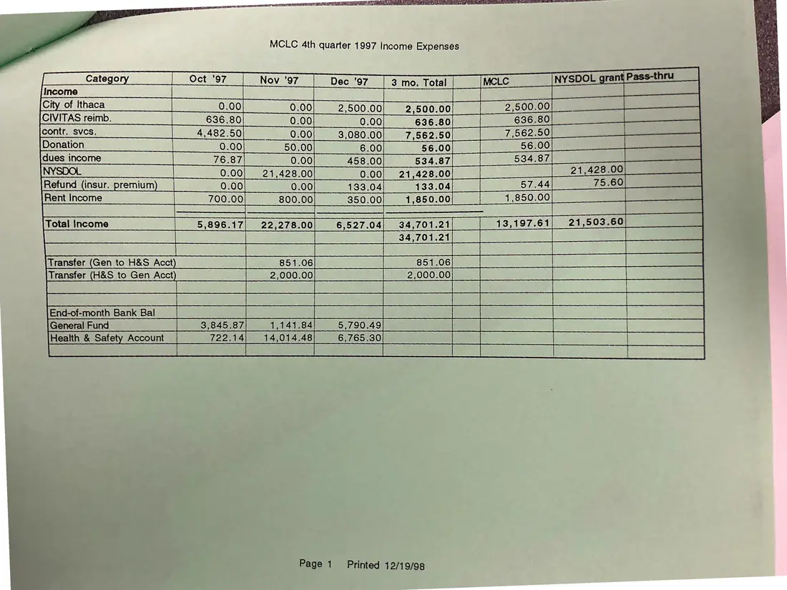
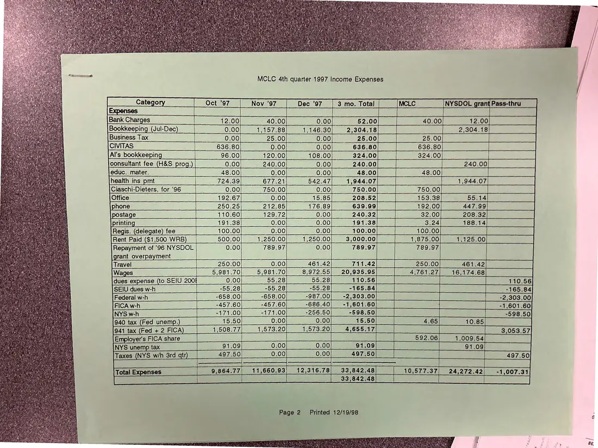

Financial report, 2 pages
MCLC fourth-quarter 1997 income and expenses
Fourth quarter 1997 (printed December 19, 1998)
A quarterly income and expense table for October–December 1997, divided between the council and the NYSDOL grant, printed December 19, 1998.
Download or cite this itemPages


(open zoom view)Read the page text (machine-read, many errors)
This text was generated automatically from the photograph and has not been corrected. The image is the authoritative record.
MCLC 4th quarter 1997 Income Expenses CIVITAS reimb. 636.80 : 4,482.50 0.00 3,080.00] 7,562.50|. | 7,562.50) , Donations leo 50.00 LMM i — Zeca nOrCO 458.00 s34.e7| | 894.67| fa NSSCE a Ro oe Wo aco a! CAEL Se [Retund (insur. premium) | 0.00/00] «133.04 133.04 [| __ 67.44] 175.60) 700.00 800.00 350.001. 1.850.001 |. 1,650.00/ nn Total Income 5,896.17| 22,278.00| 6,527.04| 34,701.21; rrr ee a a ae ee Transfer (Gen to H&S Acct B51 06) e-2 Transfer (H&S to Gen Acct PLN) Ce kad 2,000.00 a ne eee ee ea re ee Birotamonth Bank (Ball i. ii atte ics aes Vii a Te le General Fund 3,845.87 1,141.84 5 79024 Ol sintange uaaaniG ae | Page 1 Printed 12/19/98 Heath a Safely Accomm [1 722;14)in¥4,0444elmue.7es.0) | (ee ee I


(open zoom view)Read the page text (machine-read, many errors)
This text was generated automatically from the photograph and has not been corrected. The image is the authoritative record.
ny igen
y Pi “M4 oh , f ay ees Va EY 2
: ria Cay, a fie) Vey ‘ ¥ i i iy hic 1a, ae eB WBA Rie \ ‘
, } i f Hah Wi ‘ ee 4 Q Oe Oe RO eps ‘: Ae ; Caan
¢ oy ‘ SH unanikt: 4 4 4 es a Pov, cea OS he AOA
i i vA h , HK at } ie ‘ Slt iad ye ny Ae a i iy iG AG, Re
+ oh bie nar eek? Se ee by AN y Cie WEL a cen
tase } Aaa uv gie Wi : ava hes Jiri He ga oat i) ne A at Daa sock Si
¥ ‘ GWA & , art 4% Tate y g MS ; y. D5 A
. bie? % ie Kiet eae ates Wi » anit gi r tg CApiis heats (hy
At Fae a oN , yen fs tea! ( Mt" i ele A ike
M y ri a
Preaeetas , { viy wr a ‘ : * iy Ve ot } it ie 7K ay f i‘ if
y iy 5 ;
soa HORM AR OR BSC GNRELS, SGdd ME ERG RAO.
ni i Vy Ri fh uloeed tia os
Nov ‘97 Dec '97
Bank Charges | 12.00] S000] S000,
Bookkeeping (Jul-Dec (2 FOGeh — sigs
0.00} 25.00]
oe ee
Al's bookkeeping 96.00| ——- 120.00)
consultant fee (H&S prog.
eeeOLOO 48;00|s" |) <2. 48100 ca eee en ey,
ee ee eee
\Ciaschi-Dieters. for'96 | ———0.00/ ~— 750.00] 0.00) 75.0700) Sotelo 1750100) Se ee |
Once 192-67 [Ss Boole s86/5 20852 666 Onde
(phoneme ee 0 ee | 250.25/8 ee eiei85|) 176.80 S56 39009) ei ll ee02700 eA 4aho 0 ee
printings | terse) 2 oloo| = 0.00 /ie Eis se / iii S27
Regis (delegate)ifees |) © 100.00/ 7 1 000/F | 50:00) Feo 0F 00 | 001 C0 |
[Rent Paid ($1,500 WRB) | ——-500.00|_—_—s1,250.00| _—+1,250.00] _—-3,000.00/_—|_——1,875.00| 1,126.00; Cd
grant overpayment
| 461.42] 711.42
461.42 heel | 250,00 AG 142 |e eee ai
250.00
5,981.70 5,981.7 8,972.55 eee 4,761.27| 16,174.68
: 55.2 55.28 NT re ee ee
ues expense (to SEIU 200!
-165;84| |. ae eael eee ee c1eni Re
Federal w-h 658100). -658100) 0 -987.00| I N-273.057 00 a ee el | 2 40400
eAwh © | =457.60)__ 467,60] --086 40|eme 11601060 aim aaa MURINE facie
“171,00| = 256.5025, 0 8050 ea eft 2G)
e40tax (Fed unemp) | 18.50|_—0.0o| 0.00 AB SOL 1.65 one
pdiitax (reds 2 RICA) mull) 4,508.77| . 1,579:20( 1116772 0/0594).655 5117, ann eee | CE ORG 47
PmployersinioAshare le | a ic ooo ee
INYS unemptax 91,09]. 510,00). 10:00 Ne O00 ey en CTC me 0 |
Taxes (NYS wh Grd qtr) | —-497.50/ ~~ 0.00/00 Gd 2S ee a A
SS SS ee ee ae
fTotalExpenses. =| ~—«9,864.77| 11,660.93] 12,316.78| 33,842.48] | 10,577.37| 24,272.42) _-1,007.31
Total Expenses _
Page 2 Printed 12/19/98See something wrong, or recognize a person or event? Send a correction. If you hold rights in this item or think it should not be public, write to the same address.